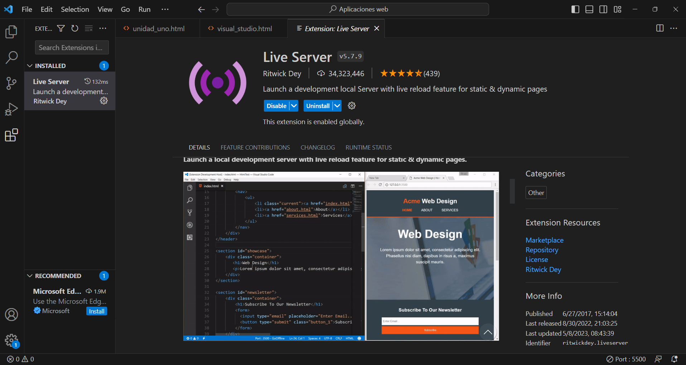

| Contenido | |
|---|---|
| Proposito del software | Proceso de instalacion |
| Video De Instalacion (auxiliar) | Evidencia de Instalacion |
El propósito principal de Visual Studio Code es ser un editor de código fuente ligero y altamente personalizable que se adapta a las necesidades de los desarrolladores. Visual Studio Code, también conocido como VS Code, fue desarrollado por Microsoft y se ha convertido en una de las herramientas más populares en el ámbito de la programación.
Para Instalar Visual Studio Code, deberas:
En este video se explica el proceso de instalacion de VSC
Esta es mi evidencia de instalacion
